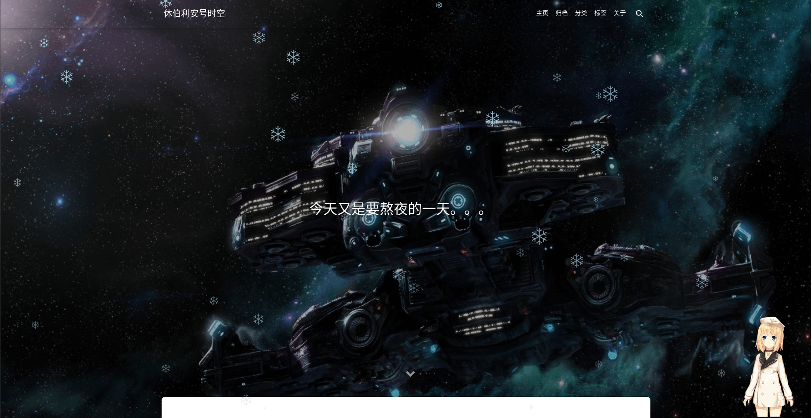
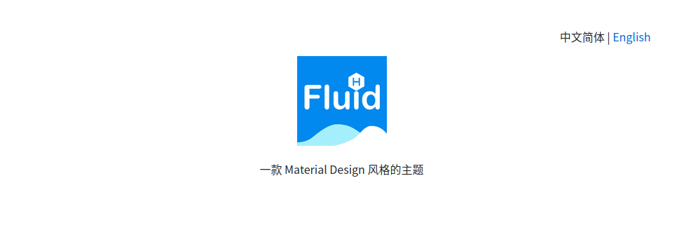
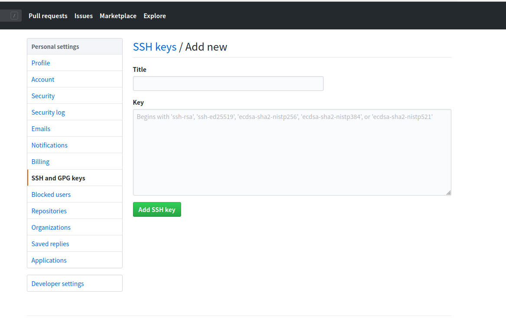

从0开始搭建一个hexo博客
本文最后更新于：7 分钟前
摘要和准备工作
我从很早以前开始就有搭建一个博客的想法，最早能够追溯到高中二年级。后来也陆陆续续尝试了搭建一群由静态页面组成的页面体系，后来发现这种页面体系有点坑，主要是但个网页的制作在页眉和页头处会有大量的相同的代码内容需要更改，而且该页面体系对于各种资源文件的路径特别敏感，很容易出错。再后来，学习的不断深入，还新学了C#的ASP.NET。这种框架的主要设计模式为动态网页开发，且这类网站挂载在IIS上，但是由于该网站服务依赖于独立的云计算资源，没钱续费，最后还是放弃了。。。经过无数次的尝试和体验，我终于发现了一个简单好用的网站框架，那就是hexo。下面就是我从0开始搭建我的hexo博客的来龙去脉。
这里使用的是 ubuntu 18.1 的操作系统对 hexo 框架的安装和在云端的 github 的部署。关于如何安装 hexo 框架，百度上已经有许多的相关教程和方法，如何在 github 部署，也有很多的相关教程，还有着很多官方文档。所以这里的hexo网站搭建教程，主要是用来介绍我在搭建网站的时候遇到的一些问题和最后的解决方案，以通过这些给自己或其他人提供相关的意见和建议。

主要流程
安装主题
我选用的主题为Fluid，该主题功能不是很多，但主要有优点使用简单，整体效果好等优点。如下是安装命令:
1 | |
安装好主题后可以在文件夹 themes 文件夹中即可查看。对于本次使用的主题 Fluid 需要对文件夹进行重命名，或在主文件目录下 config.yml 找到’theme’选项，改成theme: {你的主题名字}。同时我们会对主题文件会进行一些自定义的设置，为了避免配置在主题更新后失效，可以制定全局主题的配置文件: source/_data/fluid_config.yml 其中的内容可以直接从主题文件下的配置文件中复制粘贴。
在配置主题的配置文件中，随意增加或删除一些配置选项，或者文件内容的格式不符合文件的标准格式。hexo对此也能够继续进行生成和发布，但是其生成和发布的过程中会发生报错，所以，在一开始使用过程中发生了错误或问题，不妨检查一下配置文件的配置选项和格式标准。

评论功能
由于网站是静态的，所以可以使用第三方的评论系统。目前比较常用的有 disqus | valine | gitalk | utterances | changyan | livere 这里使用的是 livere 去官网注册一个账号，放在 Fluid 主题里面完全可以傻瓜式操作。来比力的评论插件有着很多的缺点，比如加载太过于慢了，还有其本身的样式也很丑。搭建博客的初衷是为了写作，所以就不为这个问题劳心劳力了，管他长啥样，重点不那儿！效果如图所示：

MarkDown撰写博客
hexo的文章标记语言MarkDown这语言之前都没有接触过的东西，作为一名业余选手，只能把自己以前写过的html连粘带贴地，直接应用到这里面来啦。就像博客的开篇起手式“翻墙的少年一样”，卑微地敲着html。我学院有位已经毕业了的学长说使用Latex给我们做了一个论文模板，我觉得他做的工作和我现在做的工作差不多。另外关于写作问题，我还是研习一下的命令就行，其他的复杂格式用html代替便是：
1 | 本博客所有文章除特别声明外，均采用 CC BY-SA 4.0 协议 ，转载请注明出处！ 目录 |